很早的时候就知道这个软件了，一开始的时候就听说这个作者要搞个专门让代理玩游戏的软件，结果等啊等就反应，直到前两个月，就突然冒出来 Beta 1.0.0，当然毕竟是第一个测试版本，BUG毕竟感人，不过经过这几个月的持续更新修复，基本上明显的BUG都被消灭了。再加上我有一段时间没写教程了，就把SSTAP拉出来杀了祭天给大家。
这个软件的作者同时也是 SSCAP 、 SocksCap64 这两个软件的作者，SocksCap64是通过钩子来达到让指定软件/游戏走代理的，在某些软件/游戏中可能会不可用，甚至部分游戏会有封禁风险（当成外挂之类的），所以作者就根据大家的需求，开发一个更好的 代理转全局软件给大家，那就是SSTAP。
我擦，我又废话了半天，接下来说正事。
本文章的主要目的是：让更多人知道 SSTAP，以让更多人使用它、反馈BUG、提供建议，让SSATP变得更完美。
所以本文章也就是 简单的介绍一下安装、配置、使用以及各个选项的意思。
因为作者受到某些压力，已经宣布停止SSTAP的开发，但依然可用。
SSTAP简单介绍
SSTap全称SOCKSTap, 是一款利用虚拟网卡技术在网络层实现的代理工具。
SSTap能在网络层拦截所有连接并转发给HTTP、SOCKS4/5、Shadowsocks、ShadowsocksR代理。
而无需对被代理的应用程序做任何修改或设置。
它能同时转发TCP、UDP数据包。它非常适合于游戏玩家使用。（很骚气的直接复制了官网说明）
SSTAP官方网站：https://www.sockscap64.com/sstap/
SSTAP动态订阅：https://www.sockscap64.com/newsletters-subscribe/
SSTAP Telegram群组：https://t.me/tarolab（SocksCap64/SStap/SScap相关问题讨论）
SSTAP Telegram频道：https://t.me/taronews（SocksCap64/SStap/SScap相关问题讨论）
在使用这个软件代理转全局之前，请先拥有一个可用的Shadowsocks、ShadowsocksR账号并且如果你要玩游戏，那么最好支持UDP转发，否则部分游戏可能会无法链接。
注意：SSTAP并不需要配合Shadowsocks、ShadowsocksR客户端使用，SSTAP已经自带了SS/SSR客户端功能。
下载安装
一开始自然是下载安装啦。
下载地址：https://www.lanzous.com/b380640/，密码:5god （推荐使用 1.0.9.7 版本）
SSTAP官方网站：https://www.sockscap64.com/sstap/
SSTAP Telegram频道：https://t.me/taronews（SocksCap64/SStap/SScap相关问题讨论）
大家从上面的官网或者TG频道中下载 SSTAP的压缩包，如 SSTap-beta-setup-x.x.x.x.exe.7z 文件，使用压缩软件解压这个压缩包，得到一个名为 SSTap-beta-setup-x.x.x.x.exe 的文件。
我们以管理员身份运行这个文件，会提示你选择安装语言，默认中文，一路下一步即可（选择安装目录的步骤建议改一改，不推荐安装到C盘），然后就会进入安装进度条步骤，安装过程中会提示如下图所示信息：
因为SSTAP想要拦截网络上的所有流量，就必须建立一个虚拟网卡，以此让所有网络流量都经过虚拟网卡，这样才能实现“真 · 全局代理”。
所以 按下图所示，勾选 始终信任来自....的软件，并点击 安装 按钮安装虚拟网卡 。
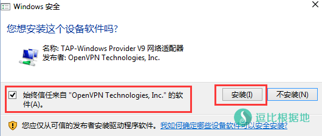
如果不出意外，很快就会安装完毕，然后会自动运行SSTAP。第一次安装SSTAP会看到如下警告说明：
请认真阅读说明内容，并点击 接受 按钮。
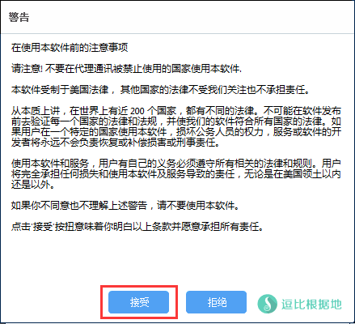
配置步骤
下面就是SSTAP的主界面了，很简洁，接下来我们就是添加 Shadowsocks/ShadowsocksR代理了。
点击下图红框所圈中的 + 号按钮（+号按钮：？？？我呢？），然后可以看到三个选项：
- 添加SOCKS代理...
- 添加SS/SSR代理...
- 通过SS/SSR链接批量添加代理...
根据自己的需求选择添加方式，这里以第二个：添加SS/SSR代理... 为例。
（第三个批量添加的选项，只是会弹出一个输入框，然后按照每行一个 ss://或ssr:// 链接添加即可）。
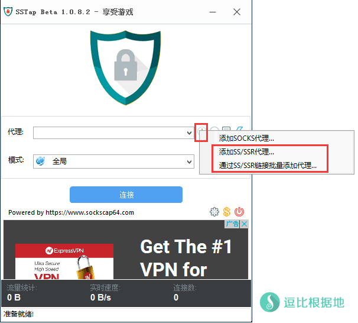
选择 添加SS/SSR代理... 选项后，就会看到如下界面（当然都是空的），然后我们可以通过 ss://链接 或 ssr://链接 或 手动输入SS/SSR账号信息的方式添加。
点击最顶部的，锁链 按钮（红框圈中），就会出现一个输入框，一次只能输入一条 ss://链接 或 ssr://链接 ，输入后点 确定 会自动解析并填写到该窗口各选项中。
添加账号后，底部的 Country 选项会自动识别你的IP地址归属地国家，当然可能会识别有误，这种情况下你需要自己选择，不过不用担心，这里的 Country 选项只是为了给你自己区分账号地区用的，只要你自己备注写清楚，那就不碍事。
关于此处附加路由选项的说明：
此处（包括添加SOCKS代理的时候）的附加路由仅针对这种情况：
你使用SS/SSR客户端链接SS/SSR账号（假设IP为 1.1.1.1），然后SS/SSR客户端的本地端口为 1080（默认），同时你在SSTAP中添加SOCKS5代理，设置IP为：127.0.0.1，端口为：1080（用户名/密码留空），那么这时候，为了避免SSTAP启动后与SS/SSR客户端死循环，你就需要在 附加路由 选项中添加你的SS/SSR服务器的IP：1.1.1.1，以此 才能正常使用。
如果你是直接添加了 SS/SSR账号，那么附加路由选项请留空！
最后确定账号添加没毛病，那就勾选最下面的 添加并激活使用 选项，然后按 保存 按钮。
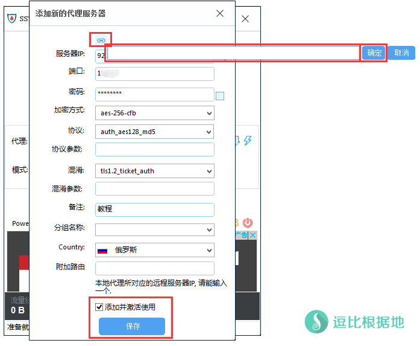
添加SS/SSR账号后，我们就在 代理下拉框 中选择你要使用的SS/SSR代理，并点击下图红框圈中的 闪电按钮，就会自动开始测试该SS/SSR账号TCP和UDP是否可用。
请确保TCP可用再继续下面的步骤。（如果TCP不可用，那么请检查SS/SSR账号是否填写错误，如果确定无误，那就检测SS/SSR账号是否本身可用，在确定不是SS/SSR账号的问题后，请携带截图和具体复现步骤说明，前往TG群联系作者解决。）
至于UDP，则取决于你要代理的软件/游戏是否需要使用UDP，如果不需要那就不说了，如果需要UDP转发，那么你的SS/SSR账号也需要支持UDP转发（ShadowsocksR服务端默认开启UDP转发，只要端口开放了，就能用）。在UDP转发不可用的情况下，如果你清楚你要代理的软件/游戏的UDP数据不需要走代理，那么你可以看下面的设置解释步骤，来设置不转发UDP。
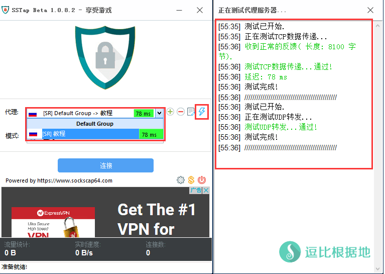
在确定添加的SS/SSR代理TCP、UDP都没毛病后，我们就该看代理模式了。
目前版本，暂时有以下五个代理模式：
- 全局：顾名思义，整个电脑网络所有流量全部都走代理，在不清楚如何选择的时候，选这个就行。
- 仅网页浏览器（全局）：仅仅让浏览器走代理，不过浏览器访问的所有网页都会走代理。
- 仅网页浏览器（跳过中国站点）：仅仅让浏览器走代理，但是浏览器访问海外的网页才会走代理，也就是国内网站直连。
- 仅代理中国IP：在全局的基础上 仅代理中国IP，也就是只有访问国内IP的网络流量才会走代理，一般都是海外用户想要返回国内用的（如玩国服游戏）。
- 不代理中国IP：与上面相反，这个是在全局的基础上 代理所有访问海外IP的网络流量，而国内IP的都直连，如果你是专玩外服游戏，那么选这个就行。
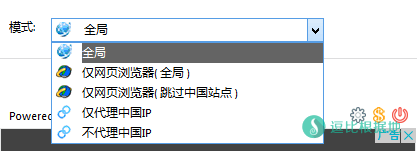
好了，前面的内容基本介绍的七七八八了，再介绍剩下的一些选项解释，就完了。
其他功能解释
在SSTAP的右下角可以看到一个 齿轮图标按钮（齿轮：？？？我呢？），点击后会显示一个菜单（如下图所示）。
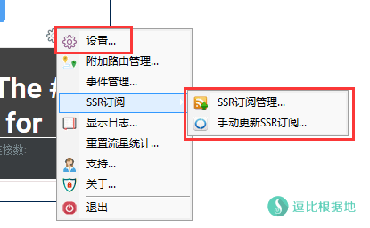
其中显示日志...、重置流量统计...、支持...、关于...、退出 这些就不需要我解释了吧，我主要解释另外几个。
设置选项解释
首先第一个 设置 选项。
打开后会看到如下图界面，各选项解释：
不转发UDP：指的是SSTAP会让UDP数据直连，而不是走代理。
本地连接：就是你目前电脑正在使用的 网卡本地链接，默认即可，不懂请不要改动！
TAP接口：就是SSTAP一开始安装的时候，创建的虚拟网卡，默认即可，不懂请不要改动！
预选DNS：这里记录了大量目前互联网上公共免费的DNS，默认即可，不懂请不要改动！
首选DNS：同上，默认即可。
备选DNS：同上，默认即可。
代理DNS服务器：指的是你电脑发出的域名解析DNS请求全部走代理（无视代理模式规则）。
开机自启动：勾选后开机后，会自动启动SSTAP。
运行后自动连接：运行SSTAP后，会自动连接上一次关闭SSTAP时所用的SS/SSR代理。
- 延迟链接：针对上面选项的扩展选项，如设置 10秒，那就是运行SSTAP后。等待10秒再自动连接SS/SSR代理。
连接后自动隐藏窗体：SSTAP连接SS/SSR账号成功后，自动隐藏窗口。
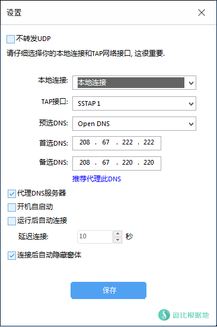
附加路由管理解释
这个在上面添加SS/SSR/SOCKS代理时，解释过部分情况，不过那只是特殊情况。
平时你如果想要某些IP走 代理 或者 直连 ，并不需要纠结于代理模式，而是直接在 附加路由管理中 添加相关动作即可。
例如：我玩的外服游戏的服务器IP是 2.2.2.2 ，而因为未知原因导致某个代理模式下，IP 2.2.2.2 不走代理，但是我想让他走代理加速。那我就可以填写 IP：2.2.2.2，动作：代理，并点击 添加 按钮即可。
注意：此功能在 连接 SSTAP后是无法操作的。
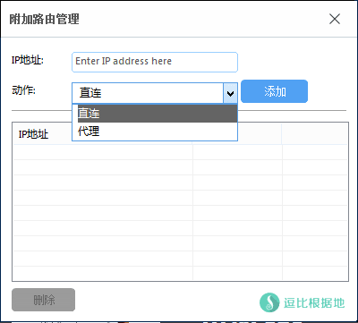
事件管理解释
此功能，可能大家一开始看到都是懵逼的，不知道是干什么的，我问了问作者，作者说这个其实就是根据事件管理进程的（至少目前是）。
简单的来说就是：
大家都知道，本地下载BT不能走SS/SSR代理，否则可能会因为P2P或BT或版权投诉导致VPS被封，那么在用SSTAP的时候，怎么确保你不会忘记关闭迅雷或者习惯性的运行迅雷下载BT（忘了SSTAP的存着），从而导致VPS被封的悲惨事件发生？
所以这个功能就诞生了，遇到上面说的情况，只需要如下图所示设置。
- 事件类型：连接之前
- 动作类型：结束进程
- 动作参数：Thunder.exe（进程名，我电脑上有个迅雷极速版貌似，不清楚其他迅雷版本的进程名是不是一样，你们自己看，我这个仅仅是示例）
然后点击 添加 按钮来添加到事件管理列表中。
接着我们打开迅雷测试效果，然后点击SSTAP主窗口中间的 连接 按钮开始链接SSTAP，你就会发现，迅雷的进程被强制结束了（无须担心忘记关闭迅雷了）。
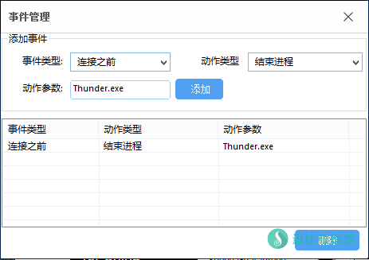
当然，部分人可能觉得 直接结束进程太过于暴力，不够naive，所以可以把 动作类型 改为 提示结束进程，这种情况下，如果你 连接 SSTAP，会发现并不会直接结束进程，而是会提醒你关闭这个进程，你可以选择暂停SSTAP连接操作 先去处理迅雷的情况。
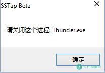
SSR订阅管理
这个功能应该很多人都清楚吧，如果你有SSR的订阅链接，那么可以在这里添加，而 Frequency 选项指的是更新频率，默认一天就行了。
流量统计功能
SSTAP会在你使用的时候，记录总流量使用、实时速度和连接数，可以有效直观的查看消耗了多少流量。
设置菜单中的 重置流量统计... 可以重置这里的统计信息。
最后的最后
最后前面全都配置完毕并且确定无误，那么就可以点击 SSTAP 主窗口的 连接 按钮链接SS/SSR代理了！
然后我们访问 ipip.net 查看IP是否是你的 SS/SSR账号的服务器IP，如果不是请检查你设置的代理模式 或 你的SS/SSR账号。
好了，写了半天，终于写完了，随后可能还会补充其他的信息。
转载请超链接注明：逗比根据地 » ShadowsocksR 转为类VPN的真 · 全局代理神器 (软件/游戏走代理) — SSTAP
责任声明：本站一切资源仅用作交流学习，请勿用作商业或违法行为！如造成任何后果，本站概不负责！


想要做游戏加速，需要考虑：
1.你本地与代理服务器之间的延迟和丢包(去程)、2.代理服务器与游戏服务器之间的延迟和丢包(去程)、3.游戏服务器返回代理服务器之间的延迟和丢包(回程)、4.代理服务器返回你本地的延迟和丢包(回程)。
去程和回程的线路可能不同，这意味着延迟和丢包也不同，你必须让 1+2 和 3+4 的延迟低于你的直连游戏服务器时的延迟，而且还不能丢包，稳定性也要好，否则要么没用要么减速。。。
至于第二个问题，去TG询问作者。